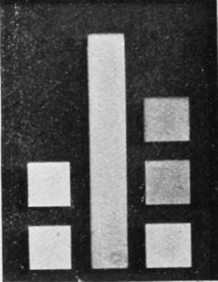
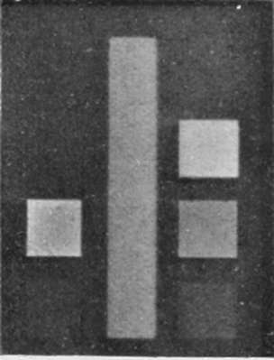
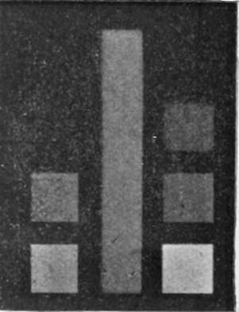
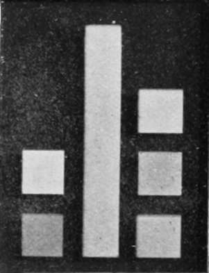
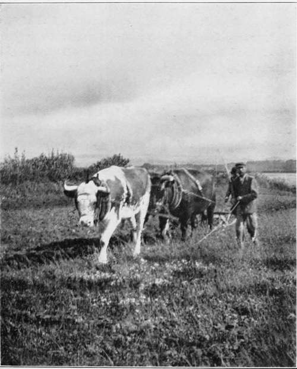

Orthochromatic Plates And Colour Screens. Part 4
Description
This section is from the book "The Barnet Book Of Photography", by Herts Barnet. Also available from Amazon: The Barnet Book Of Photography.
Orthochromatic Plates And Colour Screens. Part 4
In comparing the following illustrations with each other, no attention need be paid to the relative darkness of each—a slight variation in the time of development given to the negative, or of the exposures in making the prints, will affect this, and as the negatives had each to be made and tested before the next could be made it was impossible to develop them all at the same time, which would have been preferable. The point to be looked for is the extent to which equal density in the upright strip and the three right-hand squares is obtained. Some of the negatives showed a considerable action in the red, and although too feeble to appear in the prints it would still be of importance as giving a better rendering of orange.
Fig. 5 is from a negative made through a screen dyed with brilliant yellow, I in 10,000—that is, one ounce of the stock solution was diluted with one hundred times its bulk of water. For general subjects in which there is much contrast of colour this screen is useless, but for hand-camera work, as it only requires twice the normal exposure, it is permissible, and when open landscape with distant hills are being photographed, or for seascapes, or for delicately-tinted spring flowers it will prove of service, whilst by cutting off the blue haze that spoils distant hills it will be particularly useful.
Fig. 5.
Fig. 6 was made with a screen dyed in naphthol yellow, 1 in 100. It will be noted that the yellow has been over-corrected, and if this screen was employed with landscape subjects, totally false renderings would be given. Such a screen, however, would have its uses in photographing cirrus clouds, in which it is so difficult to get sufficient contrast. Made with a solution of 1 in 500 it would be a good screen, for taking general cloud effects. The screen used required an exposure of ten times the normal.
Fig. 6.
Fig. 7 was taken with a screen dyed in brilliant yellow, 1 in 5,000. It required an exposure of four times the normal, and although the blue is still under-corrected, it is a good screen for general subjects in which there are strong contrasts of colour, and when longer exposures cannot be given. It might, for instance, be used with a lens working at a large aperture when rippling water had to be photographed, and it was desired to get fairly correct renderings of the colour values in the surrounding foliage. In portraiture also it would give good results without unduly prolonging the exposures.
Fig. 7.
Fig. 8 was taken with a screen dyed with brilliant yellow, 1 in 1,000. It required an exposure of about six times the normal, and, as will be seen, approaches very nearly to what is desired, but the yellow is a shade too bright—it is in fact over-corrected. A number of experiments were made to bring all four tints equal, but at first without much success. Either the blue or the yellow predominated, or if they were level the green was too dark. At last a screen made up of one sheet of gelatine dyed in naphthol yellow i in 5,000, and another dyed in brilliant yellow also 1 in 5,000, was used with the result seen in Fig. 1. The exposure was as nearly as possible three times the normal. In making screens for use with red sensitive plates it will probably be found that full correction for the red is accompanied by over-correction for the yellow. This may be adjusted by adding a third film stained with methyl violet 1 in 5,000. Such a combination is very much darker visually, and is of a deep citron colour, but photographically its cuts off very little more light, and in practice little if any additional exposure will be required.
Fig. 8.
Aniline dyes cannot always be mixed together, but these I have mentioned may be compounded in any proportions. It is, therefore, quite possible to add the violet to the brilliant yellow and the naphthol yellow in solution, and stain one piece of gelatine, with the advantage of having only one film to cement between the glasses. If, instead of working in the way I have described, anyone prefers to make the screens by pouring the gelatinous solution direct on to one of the glasses, the proportions named will give similar results. Those who do not care to make the colour patches as test objects can, by following the directions given, get results that will at least be much better than those given by bits of yellow glass chosen at random.
In whatever way the screens are made it will be necessary to determine the exposures required with them, and the simplest plan I can suggest without the use of special apparatus is as follows :—A bromide or platinotype print should be pinned up in good daylight, and a piece of cardboard should be placed in the bellows of the camera in such a way that one-half of the plate is protected from the image thrown by the lens. The correct exposure for such a subject is then given, and the shutter of the dark slide is closed. The cardboard shield is then shifted so as to cover over the other half of the plate, and the colour screen is placed in front of the lens. The exposure must now be given in sections by partially drawing the shutter between each. One end of the plate should receive very much less than is supposed to be the required exposure with the colour screen, and the other end very much more, while the middle sections should be given a little less, a little more, and the section exactly in the centre should have just that which is supposed to be correct. When the plate is developed it will not be difficult to decide which exposure corresponds with that given without the screen. It is then a simple matter to decide what additional exposure is needed when the screen is used.
Those who are at all advanced in pictorial work need not be told that scientifically correct colour renderings may be quite false from a pictorial standpoint. Colour contrast and colour values are two different things. It may often happen that two objects in close proximity are visually of equal brilliance, and with the screen used in Fig. i would be rendered in tints of uniform grey. If, however, one was a blue and the other a vellow the contrast that was visible to the eye would be entirely lost. Even without assuming such an extreme case, it might well be that the correct screen would completely upset the pictorial balance. In such cases the choice of a screen that might not give correct colour values would yet give the truer pictorial rendering of the subject. The possession of a battery of screens and an intimate knowledge of their effects will place a power in the photographer's hands that cannot well be over-estimated.
PLOUGHING IN DORSET. By W. THOMAS.
Continue to:
- prev: Orthochromatic Plates And Colour Screens. Part 3
- Table of Contents
- next: Orthochromatic Plates And Colour Screens. Part 5
Tags
paper, print, negative, exposure, lens, development, camera, focus